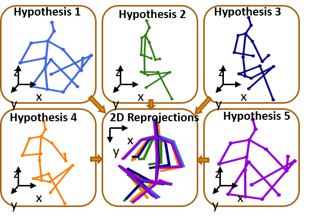

BaiyangI am currently a second-year PhD student(2018-) in the Computer Science Department at National Univeristy of Singapore, supervised by Prof. Gim Hee Lee. Before, I obtained my Master's degree in the Electronic Engneering Department at Beihang University, supervised by Prof. Xia Mao. I obtained my Bachelor's degree in the Electronic Engneering Department at Dalian Maritime University. |
My research focuses on Computer Vision and Deep Learning. Specifically, I have been working on 3D Human Pose Estimation and Motion Prediction. I am also interested in Uncertainty Modeling, Active Learning and Domain Adaptation.
|  |
Generating Multiple Hypotheses for 3D Human Pose Estimation with Mixture Density Network
Chen li |